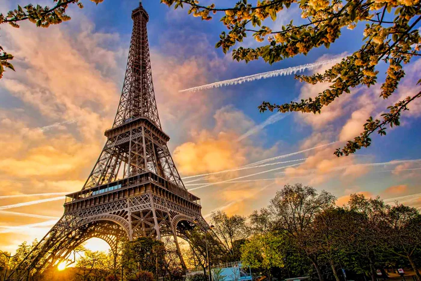
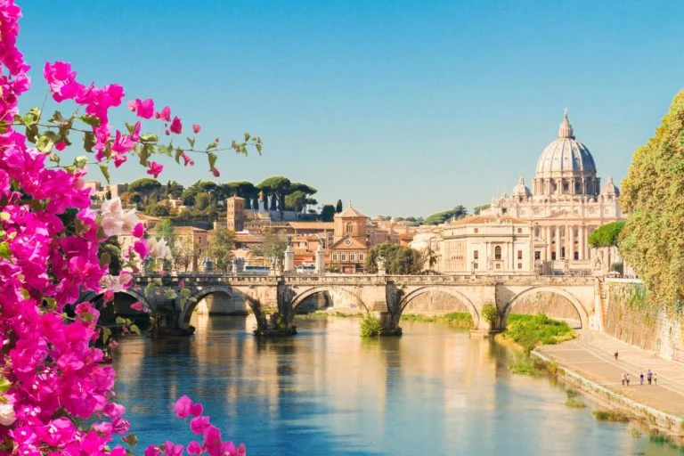
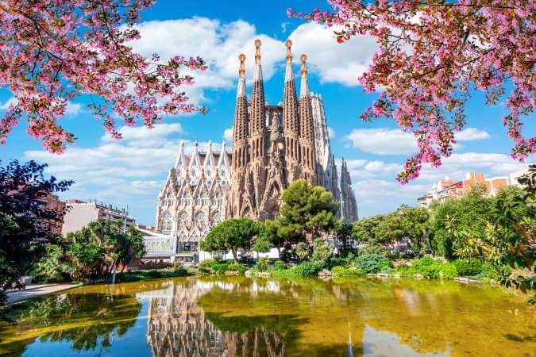
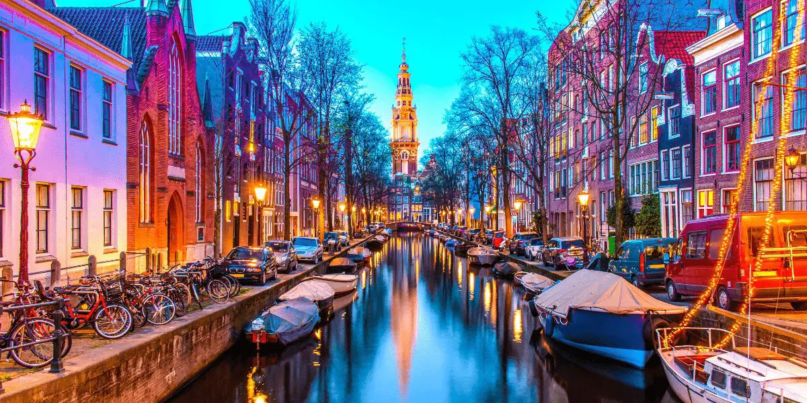

Paris, França
Visite a cidade luz e encante-se com a Torre Eiffel, museus e cafés charmosos.

Roma, Itália
Explore as ruínas do Coliseu, a história do Império Romano e a deliciosa gastronomia italiana.

Barcelona, Espanha
Admire a arquitetura de Gaudí, caminhe por Las Ramblas e relaxe nas praias incríveis.

Amsterdã, Holanda
Ande de bicicleta pelos canais, visite museus e conheça a vibrante vida cultural da cidade.